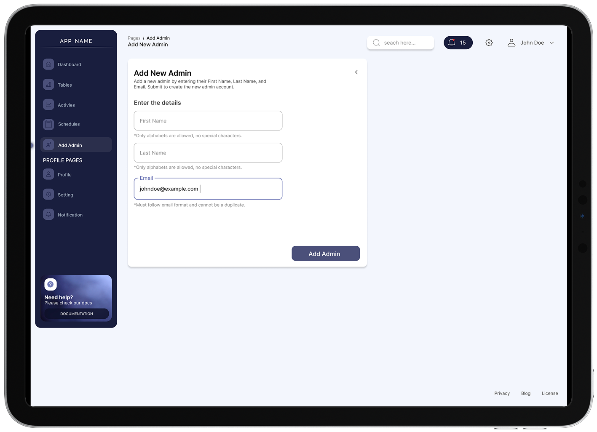

An employee portal that did everything, so nobody could find anything.
From interviews with people who live in data tools.
Access log, today’s users, clock, recent logins.

Visually appealing and easy to navigate.
Clearer than other apps.
Smooth and modern.